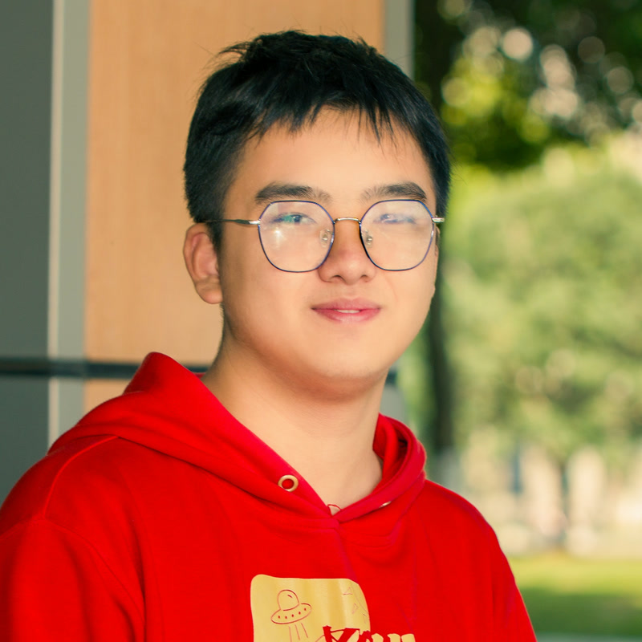
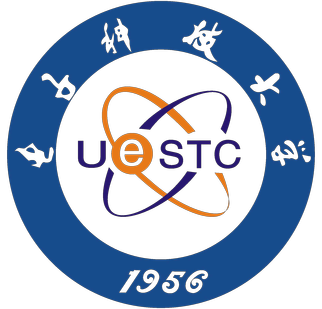
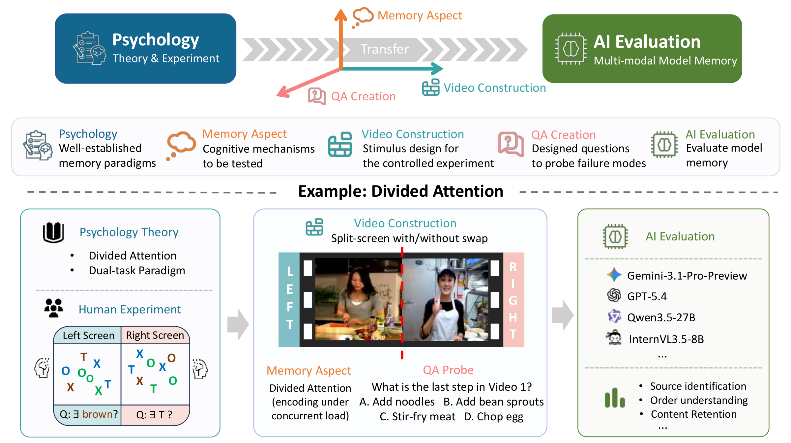
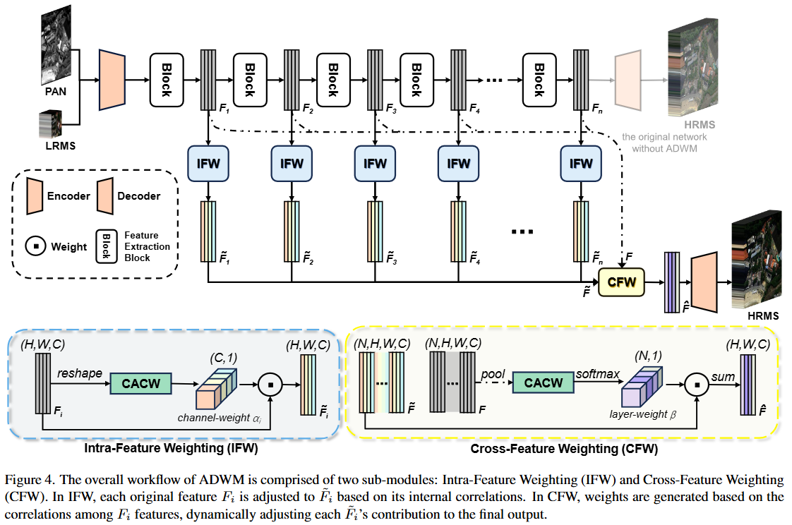

Jie Huang
B.Eng. Student in Mathematics-Physics Fundamental Science
Yingcai Honor College, University of Electronic Science and Technology of China
Yingcai Honor College, University of Electronic Science and Technology of China
Email: jayhuang303hh@gmail.com

Biography
I am a fourth-year undergraduate student in the Yingcai Honor College at UESTC (2023–2027), majoring in Mathematics-Physics Fundamental Science. I am currently a research intern at PKU-VaLuE-Lab, working with Yiwu Zhong. My research interests are Multi-Modal LLMs, Agentic AI, Embodied AI and Psychology. Earlier, I also worked on diffusion model and remote-sensing image fusion.
👋 If you're interested in my research or just want to chat, feel free to reach out by email or .
News
- 2026/05/21 Released M³Eval, a benchmark for multimodal memory in long-form video, together with the code and dataset.
- 2025/04/19 Released code and weights for ADWM, a general adaptive dual-level weighting mechanism for pansharpening.
- 2025/02/07 Released the WFANet codebase for wavelet-assisted multi-frequency attention in pansharpening.
Experience
-
PKU Research Intern with Yiwu Zhong — Agent Self-Evolution.09/2025 - Present
-
BIGAI Research Intern at Beijing Institute for General Artificial Intelligence (BIGAI).07/2026 - 08/2026
-
UTAustin Research Intern with Qiang Liu — Diffusion Large Language Model.03/2025 - 09/2025
-

UESTC Research Intern with Liangjian Deng — Remote-Sensing Image Fusion.01/2024 - 03/2025
Selected Publications
(* equal contribution · † corresponding author) Full list on Google Scholar



Education
-
University of Electronic Science and Technology of China (UESTC) B.Eng. in Mathematics-Physics Fundamental Science · Yingcai Honor College GPA 3.99/4.0Sep 2023 – Jun 2027 (expected)
Selected Honors & Awards
-
National Scholarship Top recipient in the college2024
Services
-
Founder UESTC AI Club I spent the best years of my undergraduate life with friends such as Rui Huang, Haorui Chen, Mengyu Yang, Zeyu Xia, Chang Zou, and others.